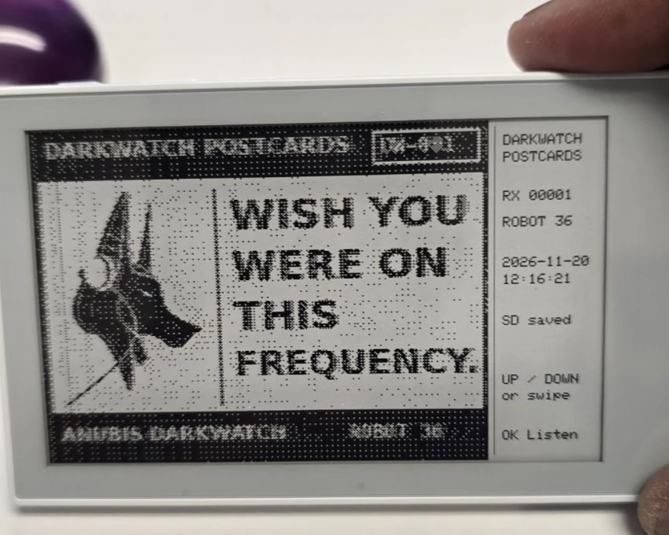

ROBOT 36 · PD90 · PD120
Darkwatch
Postcards
Turn a sound into a postcard. Play a Robot 36, PD90, or PD120 transmission near your Sticky and watch the picture appear on e-paper.

FIRMWARE / v0.2.0
Install on your Sticky
For the 3.97-inch Seeed Studio reTerminal Sticky (ESP32-S3). Installation replaces the firmware and partition layout. Before your first install, save a full factory backup.
Connect the Sticky with a USB data cable, close any serial monitor, then select its CH343 port. When prompted, leave Erase device unchecked.
Loading USB installer…
TEST TRANSMISSION / DW–001
Receive your first postcard
Tap AI/OK and wait for the listening screen. Place a speaker a few inches from the lower microphone, set a moderate volume, and play the track from the start. The Sticky detects the mode automatically and saves a 320 × 240 grayscale postcard.
Robot 36 · 37 seconds
PD90 · 1 min 31 sec
PD120 · 2 min 7 sec
Check the microphone
Hold AI/OK for two seconds and release. When the Sticky prompts you, play the speaker check from the beginning. Look for a pilot near 1,900 Hz, header lock, and 240 rows.